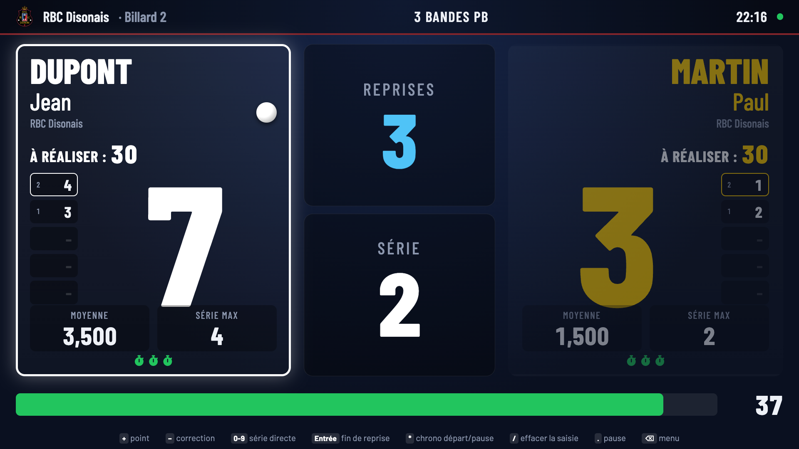

RBC Disonais · Mode d'emploi
Les nouveaux marquoirs
Lancer une partie, arbitrer au pavé numérique et suivre les rencontres du club en direct : tout ce qu'il faut savoir, en quelques pages.

Royal Billard Club Disonais asbl · Chalet Bonvoisin · Disonwww.rbcd.be